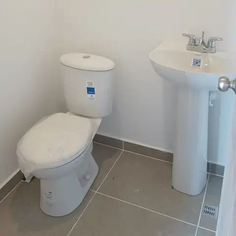
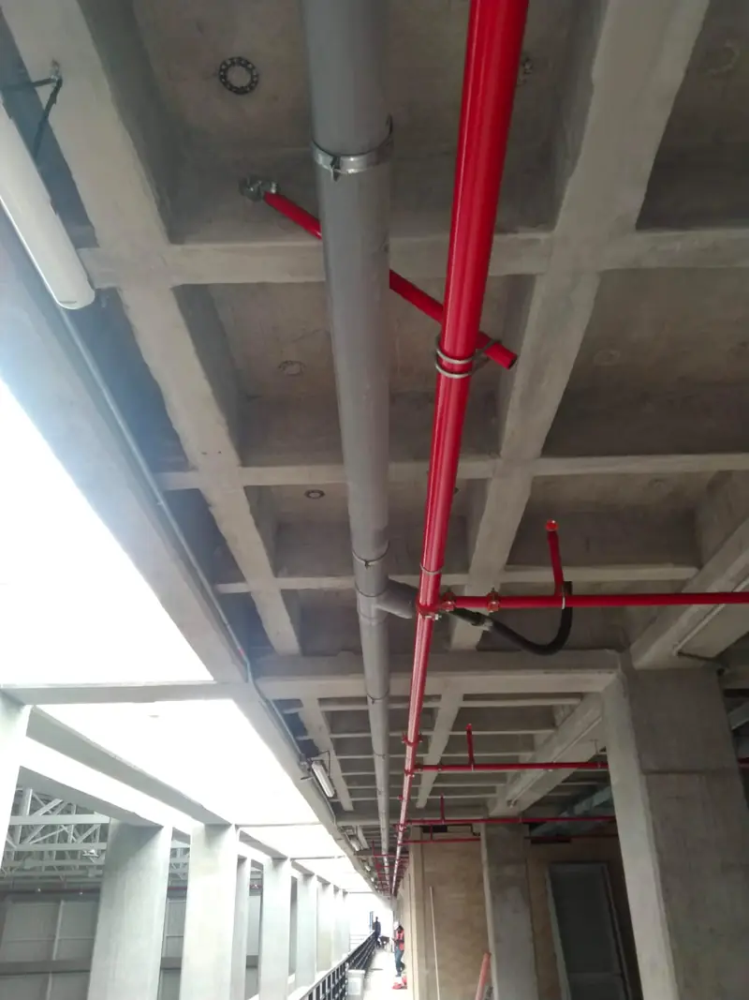
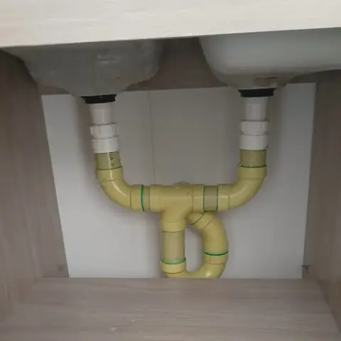
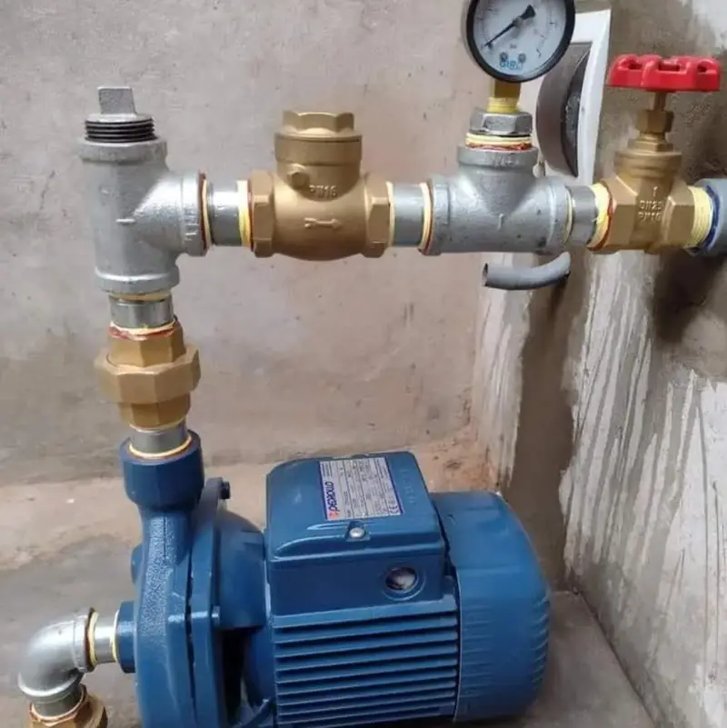

Técnicos disponibles ahora
Plomero a domicilio en Medellín, las 24 horas
Fugas, destapes, calentadores y redes de gas resueltos por técnicos certificados. Llegamos en 30 a 60 minutos a todo el Valle de Aburrá: Medellín, Envigado, Sabaneta, Itagüí y Bello.
- +8 años en Medellín
- Técnicos certificados
- Garantía en cada trabajo


Servicios de plomería
Lo que resolvemos en tu casa o negocio
Un solo equipo para todo lo que tenga que ver con agua, desagües y gas. Diagnóstico claro y precio antes de empezar.
Reparación de fugas
Detectamos fugas ocultas en muros y losas sin demoler, y reparamos tubos reventados el mismo día.
Ver servicioDestape de drenajes
Baños, cocinas, sifones y bajantes destapados con equipo mecánico y de presión, sin romper.
Ver servicioInstalación de tuberías
Redes hidráulicas y sanitarias en PVC, CPVC y cobre para remodelaciones y obra nueva.
Ver servicioCalentadores y boilers
Instalación, mantenimiento y reparación de calentadores de paso, eléctricos y de acumulación.
Ver servicioRedes de gas
Instalación, detección de fugas y certificación de redes de gas natural y propano.
Ver servicioPlomería para empresas
Mantenimiento preventivo y correctivo para restaurantes, hoteles, edificios y conjuntos.
Ver servicio



Por qué elegirnos
Plomeros certificados en los que puedes confiar
Llegamos rápido
Técnicos distribuidos en la ciudad para llegar en 30 a 60 minutos.
Técnicos certificados
Personal capacitado en redes hidráulicas, sanitarias y de gas bajo norma NTC.
Precio claro
Visita de $30.000 descontable y presupuesto antes de empezar. Sin sorpresas.
Garantía real
Todos los trabajos tienen garantía y materiales certificados.
Así trabajamos
De tu mensaje a la solución en 4 pasos
- 1
Nos escribes
Por WhatsApp o llamada, a cualquier hora. Si puedes, envía una foto del problema.
- 2
Diagnóstico
El técnico llega, revisa y ubica la causa sin romper donde no hace falta.
- 3
Presupuesto
Te decimos el valor antes de empezar. La visita se descuenta del total.
- 4
Solución con garantía
Reparamos, probamos y dejamos todo limpio. El trabajo queda garantizado.
Trabajos reales
Proyectos recientes en Medellín


Cobertura
Plomero cerca de ti en todo el Valle de Aburrá
Nuestros técnicos salen desde distintos puntos del área metropolitana para llegar rápido a tu casa, apartamento o negocio.
- El Poblado
- Laureles
- Envigado
- Sabaneta
- Itagüí
- Bello
- Belén
- Robledo
- Castilla
- Manrique
- Copacabana
- La Estrella
- Estadio
- Buenos Aires
- Guayabal
- Calasanz
Opiniones
Lo que dicen nuestros clientes
“Llegaron en menos de una hora a reparar una fuga en el baño. Trabajo limpio, precio justo y explicaron todo con detalle.”
“Emergencia a las 2 a.m. por un tubo reventado; en 45 minutos ya estaban aquí solucionándolo. Excelente atención 24/7.”
“Muy profesionales. Instalaron el calentador nuevo, dejaron todo impecable y me explicaron cada paso.”
Resolvemos tus dudas
Preguntas frecuentes sobre plomería en Medellín
¿Cuánto cuesta un plomero a domicilio en Medellín?
La visita diagnóstica cuesta $30.000 y se descuenta del valor total si realizamos el trabajo. Después del diagnóstico te damos un presupuesto claro antes de empezar, sin cobros ocultos.
¿Atienden emergencias de plomería las 24 horas?
Sí. Atendemos emergencias 24 horas, los 365 días del año, incluidos domingos y festivos, en Medellín y todo el Valle de Aburrá. Escríbenos por WhatsApp o llámanos al 302 227 4397.
¿Cuánto tarda en llegar el plomero?
En condiciones normales de tráfico llegamos en 30 a 60 minutos a la mayoría de barrios de Medellín, Envigado, Sabaneta, Itagüí y Bello. Las emergencias de gas y tubos reventados tienen prioridad.
¿Los trabajos tienen garantía?
Sí. Todos nuestros trabajos tienen garantía. El técnico te indica el plazo según el tipo de reparación o instalación y queda registrado en el servicio.
¿Reparan fugas sin romper paredes?
Sí. Usamos prueba de presión y detección acústica para ubicar el punto exacto de la fuga antes de abrir. Así solo intervenimos donde es necesario.
¿En qué zonas trabajan?
Cubrimos todo el Valle de Aburrá: Medellín (El Poblado, Laureles, Belén, Robledo, Castilla, Manrique y más), Envigado, Sabaneta, Itagüí, Bello, Copacabana y La Estrella.
Blog
Consejos y guías de plomería
¿Cómo detectar una fuga de agua oculta en tu apartamento?
7 señales y la prueba del medidor que puedes hacer tú mismo en 30 minutos.
5 min de lectura Precios¿Cuánto cuesta un plomero en Medellín? Precios 2026
Tabla de precios de referencia para 9 servicios de plomería.
6 min de lectura Destapes¿Cómo destapar un baño sin llamar al plomero?
4 métodos caseros seguros y las señales de que ya necesitas ayuda profesional.
4 min de lectura CalentadoresSeñales de que tu calentador necesita reemplazo
8 señales y la regla del 50 % para decidir si reparar o cambiar.
5 min de lecturaPlomeros certificados en Medellín con más de 8 años de experiencia
En Plomeros Medellín somos un equipo de técnicos certificados que desde 2016 resuelve emergencias y proyectos de plomería en Medellín y todo el Valle de Aburrá. Nos especializamos en reparación de fugas, destape de drenajes, instalación de tuberías, calentadores de agua y redes de gas domiciliario.
Atendemos casas, apartamentos, restaurantes, hoteles y conjuntos residenciales. Cada servicio tiene garantía, materiales certificados y una tarifa transparente. La visita diagnóstica cuesta $30.000 y se descuenta del valor total al ejecutar el trabajo.
Nuestra prioridad son las emergencias: si tienes un tubo reventado a las 2 a.m. o sientes olor a gas, un técnico sale hacia tu ubicación de inmediato.
¿Tienes un problema de plomería ahora?
Escríbenos o llámanos. Te respondemos en minutos, a cualquier hora.